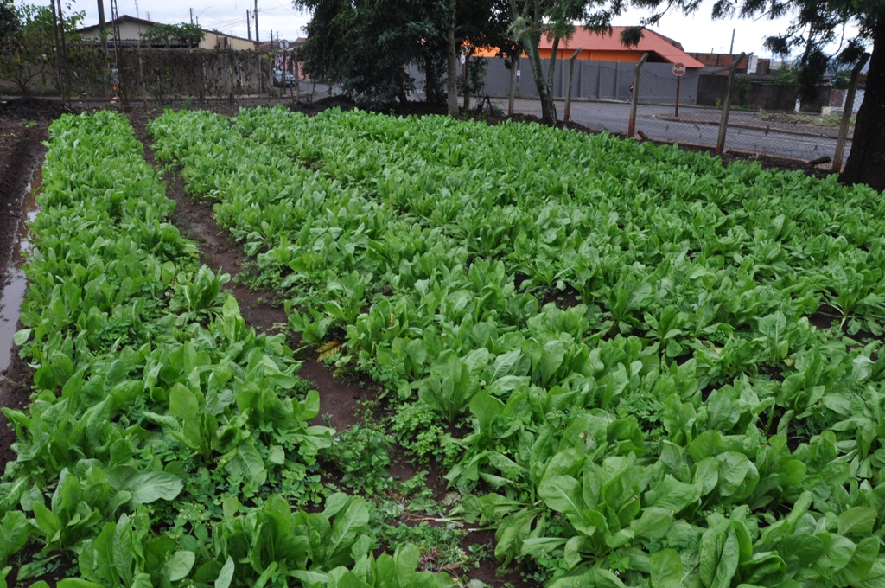

<div class="row">
  <div class="col-md-12 col-lg-12">
    <nb-card size="large">
      <nb-tabset>
        <nb-tab tabTitle="Alface" >
          <div class= "col-md-12 col-lg-12">
              <h4 class="subtitle">Cultura</h4>
            <p>A alface é uma das culturas mais populares, plantada e consumida em todo o território brasileiro. Os vários cultivares desta hortaliça adaptam-se bem à nossa diversidade de clima.</p>
            <p>Tal como outras culturas folhosas, é caracterizada por um sistema radicular superficial que exige um rigoroso controle de irrigação.
            O manejo da umidade ao longo do período de crescimento é um fator crítico para a boa produção com qualidade. Mesmo em períodos relativamente curtos de umidade inadequada, pode afetar a cultura.</p>           
            <p>Rendimentos de alface podem chegar a até 50-70 toneladas por hectare, dependendo da variedade, número de ciclos de plantio e condições do solo.
            A duração do ciclo plantio/colheita em solo é de 60-90 dias no outono e no verão 21 a 30 dias.</p>
          </div>
          <div class= "col-md-12 col-lg-12" align="center">
            
          </div>
          <div class= "col-md-12 col-lg-12">
            <h4 class="subtitle">Clima</h4>
            <p>A alface é uma cultura típica de clima temperado, com temperaturas de 13 a 16 °C.</p>            
            <p>Durante a germinação, são exigidas temperaturas de 7-24 °C. Dias curtos são ideais para cultivo de alface. Dias de mais de 12 horas de duração causam florescimento do alface.</p>         
            <p>Os cultivares desenvolvidos para as nossas condições de verão apresentam-se com qualidade inferior, com cabeças menos compactas e menos folhas.</p> 
            <h4 class="subtitle">Solo</h4>
            <p>O solo neutro (pH-7) ou solo levemente ácido é preferível. Bons rendimentos comerciais podem ser alcançados em condições de solo pesados.
              A alface é sensível ao frio e à salinidade. Água com condutividade elétrica  (CE) de 1,3 dS/m ou menos deve ser usada para irrigação. Acima deste valor haverá redução na produtividade, sem contudo a alface demonstrar sintomas.</p>
          </div>
          <div class= "col-md-12 col-lg-12">
            <h4 class="subtitle">Irrigação de alface e folhas verdes</h4>
            <p>O objetivo da irrigação é evitar estresse hídrico, especialmente durante a formação da cabeça.</p>
            <p>Estresse hídrico pode ocorrer em uma cultura quando a umidade do solo é excessiva ou quando é deficiente. Quando níveis de concentração de oxigênio na atmosfera do solo são reduzidas devido ao encharcamento por um longo período de tempo, o sistema de raízes pode ser severamente danificado. Alface e plantas de folhas verdes são especialmente suscetíveis ao estresse hídrico devido aos seus sistemas radiculares rasos.</p>
            <p>– Baixo rendimento e produtos de má qualidade (em termos de firmeza, tamanho da cabeça e cor).</p>
            <p>– Apodrecimento das raízes</p>
            <p>Escassez de água gera atraso na colheita, qualidade inferior, bem como reduz a produtividade. No entanto irrigação em  excesso, especialmente no final do ciclo, pode reduzir a qualidade e a vida de prateleira (pós-colheita).</p>
            <p>A irrigação irregular ou excedente, acima da quantidade necessária para substituir a evapotranspiração, causa lixiviação de nutrientes, especialmente o nitrogênio, levando-o abaixo da zona  radicular.</p>
            <p>O uso eficiente da água, ou seja, bom manejo da irrigação, alta uniformidade de aplicação de água e baixa taxa de precipitação (no caso de aspersão), irão ajudar a evitar condições de estresse e compactação do solo.</p>
            <p>A irrigação por gotejamento é uma técnica bastante viável, pois apesar de maior custo inicial, tem a vantagem de possibilitar o fracionamento dos fertilizantes aplicados com a água de irrigação, possibilita o controle mais efetivo do volume de rega, baixo consumo de energia e de mão de obra de operação e rega diária, mantendo sempre o solo em condições ideais de água.</p>
            <p>Um fator de extrema importância na irrigação da alface é a qualidade da água. A condutividade elétrica do extrato saturado do solo, que mostra o teor de salinidade dele, deve ser inferior a 0,2 dS/m. A cada valor unitário de aumento da condutividade a partir de 0,2 dS/m, proporciona redução de 17% na produção comercial de alface, com formação de cabeças pequenas e mal formadas (fonte: EFEITO DA SALINIDADE DA ÁGUA DE IRRIGAÇÃO NA PRODUÇÃO DA ALFACE AMERICANA –E. S. Gervásio, J. A. Carvalho & M. J.  Santana). A irrigação por gotejamento, que mantém a umidade do solo bastante próxima à capacidade de campo, beneficia a redução da salinidade deste.</p>
          </div>

          <div class="col-md-12 col-lg-12">
              <h4 class="subtitle">Programa de irrigação</h4>
            <p>Para evitar estresse hídrico, fazer irrigação com limite de déficit de água de 20-30%. Usando-se tensiômetros, reiniciar a irrigação quando marcarem 10-25 centibars, de acordo com o tipo de solo.</p>
            <p>Caso contrário, irrigar a cada 1-3 dias, na época de inverno.</p>
            <p>Com temperaturas elevadas é preferível pulso de irrigação, a fim de preservar a umidade adequada.</p>
            <p>Cálculo de necessidade de água:</p>
            <p>Necessidade de água diária = (ETP local x Kc x Cobertura Foliar)/Eficiência de rega.</p>
            <p>Kc (coeficiente da cultura) = Varia de 0,25 – 0,90, dependendo do estágio de desenvolvimento da alface.</p>
            <p>Cobertura foliar = Área coberta pela cultura/área total .</p>
            <p>Eficiência de rega = gotejamento de 0,9 a 0,95 e aspersão 0,6 a 0,7.</p>
          </div>
          </nb-tab>
        <nb-tab tabTitle="Couve">
            <div class= "col-md-12 col-lg-12">
              <h4 class="subtitle">Cultura</h4>
              <p>A couve-manteiga, de folhas verde-claras, lisas e arredondadas, é a variedade mais comum no mercado nacional. </p>
              <p>Há cultivares de couve que toleram temperaturas altas, mas a preferência é pelo clima ameno ou frio, que permite plantio durante o ano inteiro. O desenvolvimento da hortaliça se dá melhor em locais com alta luminosidade, inclusive com incidência direta dos raios solares, porém, com sombreamento parcial.</p>
              <div class= "col-md-12 col-lg-12" align="center">
                  
              </div>
              <h4 class="subtitle">Propagação</h4>
              <p>Por meio de sementes, a semeadura pode ser em sementeira ou em outro recipiente, com uso de substratos comerciais à base de casca de pínus ou terra peneirada. Use de duas a três sementes por célula a uma profundidade de cerca de 0,5 centímetro. Regue todos os dias. No desbaste, deixe uma planta após a germinação. Se a propagação for por mudas, use os rebentos que surgem de gemas axilares no caule principal de plantas adultas. Com 20 centímetros ou mais, retire-os principalmente da lateral da base da planta, enraizando-os nas mesmas condições e com iguais insumos utilizados nas sementes.</p>
              <p>Quando as mudas das sementeiras atingirem de quatro a seis folhas e, pelo menos, 10 centímetros de altura. Indica-se fazer o procedimento no fim da tarde ou em dias nublados e chuvosos. Em seguida, irrigue o solo.</p>
              <h4 class="subtitle">Plantio</h4>
              <p>Sem que o solo fique encharcado, para evitar danos às raízes e o surgimento de doenças, mantenha-o sempre úmido. Por isso, o ideal é que o solo seja bem drenado, além de fértil, com boa disponibilidade de matéria orgânica e pH entre 6 e 7,5.</p>
              <h4 class="subtitle">Adubação</h4>
              <p>O solo do canteiro deve ser bem preparado. Incorpore de 2 a 5 quilos por metro quadrado de esterco bovino curtido e adição de fertilizante químico tipo NPK, de acordo com a análise de solo.</p>
              <h4 class="subtitle">Espaçamento</h4>
              <p>São necessários 15 centímetros para a couve crescer em um vaso de, no mínimo, 25 centímetros de diâmetro. No canteiro, calcule de acordo com a variedade e as condições de cultivo. Porém, em geral, o espaçamento é de 80 centímetros a 1 metro entre linhas e de 50 centímetros entre plantas.</p>
              <h4 class="subtitle">Produção</h4>
              <p>Varia de acordo com a propagação, mas produzem entre 4 e 5 quilos de folhas por ano por planta – cerca de 125 mil maços de 400 gramas por hectare em áreas comerciais. Mudas plantadas diretamente no canteiro têm folhas prontas em, aproximadamente, 50 dias. Já a couve oriunda de sementes somente após cerca de 90 dias. Faça a colheita de folhas com 20 a 40 centímetros de comprimento e de 20 a 25 centímetros de largura. </p>
              <h4 class="subtitle">Resumo</h4>
              <p>Solo: úmido, mas bem drenado, com pH entre 6 e 7,5</p>
              <p>Clima: ameno ou frio Área mínima: pode ser cultivada, inclusive, em vasos</p>
              <p>Colheita: cerca de 50 dias após o plantio de mudas e de 90 dias depois da semeadura</p>
            </div>
        </nb-tab>
        <nb-tab tabTitle="Rúcula">
          <div class="col-md-12 col-lg-12">
            <h4 class="subtitle">Cultura</h4>
            <p>A rúcula é uma planta anual cujas folhas são consumidas cruas, cozidas ou refogadas, sendo utilizadas em diversos tipos de receitas culinárias. Suas folhas tem um sabor picante e amargo, sendo que as folhas mais jovens, ou as folhas colhidas de plantas cultivadas em um clima mais frio, tendem a ser menos amargas e assim são consideradas como as mais saborosas para consumo em saladas. As sementes também podem ser consumidas, e são algumas vezes utilizadas no lugar das sementes de mostarda.</p>
            <p>Esta planta, na época da colheita, atinge de 10 a 30 cm de altura, dependendo da variedade cultivada e das condições de cultivo. Durante a floração, pode chegar a atingir de 50 a 100 cm de altura.</p>
            <div class= "col-md-12 col-lg-12" align="center">
                
            </div>
            <h4 class="subtitle">Clima</h4>
            <p>A rúcula é uma hortaliça que cresce melhor em um clima ameno, com temperaturas em torno de 16 a 22°C. Em temperaturas mais altas a planta tem seu desenvolvimento prejudicado, florescendo precocemente. Além disso, quando cultivada em temperaturas elevadas, suas folhas tendem a ser menos tenras e mais amargas. Embora suporte bem temperaturas próximas de 0°C, em regiões com invernos rigorosos as plantas jovens podem necessitar de proteção, como o cultivo em estufas agrícolas.</p>
            <h4 class="subtitle">Luminosidade</h4>
            <p>No outono e inverno pode ser cultivada com sol direto o dia todo, mas no verão pode ser melhor prover sombra parcial durante as horas mais quentes do dia.</p>
            <h4 class="subtitle">Solo</h4>
            <p>O solo deve ser bem drenado, fértil, rico em matéria orgânica, com pH entre 6 e 7.</p>
            <h4 class="subtitle">Irrigação</h4>
            <p>Irrigue com frequência para que o solo seja mantido sempre úmido, mas sem que o solo permaneça encharcado.</p>
            <h4 class="subtitle">Plantio</h4>
            <p>Semeie as sementes diretamente no local definitivo, superficialmente ou a uma profundidade não superior a 0,5 cm no solo. As sementes germinam normalmente em 4 a 8 dias. Quando as plantas atingem cerca de 10 cm de altura, o excesso de plantas pode ser colhido para que seja atingido um espaçamento adequado. Se for conveniente, as sementes também podem ser semeadas em sementeiras, com as mudas sendo transplantadas assim que estiverem grandes o suficiente para serem manuseadas.</p>
            <p>O espaçamento recomendado varia com a variedade cultivada, as condições de cultivo e o estágio de desenvolvimento no qual as plantas serão colhidas, podendo ser de 15 a 60 cm entre as linhas de cultivo e 10 a 30 cm entre as plantas.</p>
            <h4 class="subtitle">Tratos culturais</h4>
            <p>Retire as plantas invasoras que estiverem concorrendo por recursos e nutrientes.</p>
            <h4 class="subtitle">Colheita</h4>
            <p>A colheita da rúcula pode ser feita a partir de 20 a 65 dias, arrancando toda a planta ou colhendo apenas as folhas bem desenvolvidas, de forma que a colheita pode se estender por semanas. Em qualquer caso, a colheita deve ser feita antes que a planta comece a florescer, pois neste estágio as folhas geralmente se tornam mais amargas.</p>
          </div>
        </nb-tab>
      </nb-tabset>
    </nb-card>
  </div>

  
</div>
